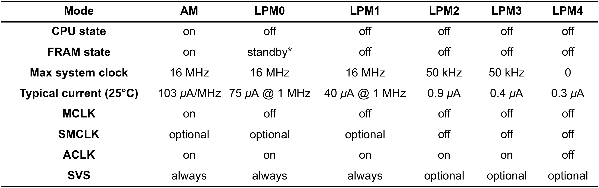
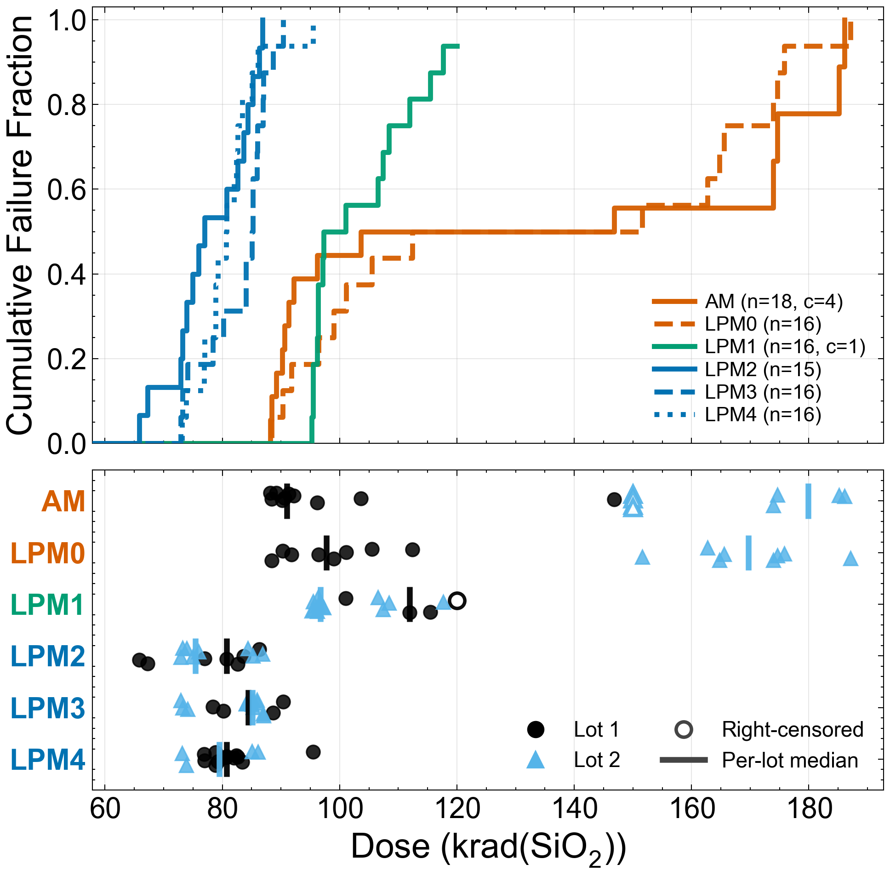
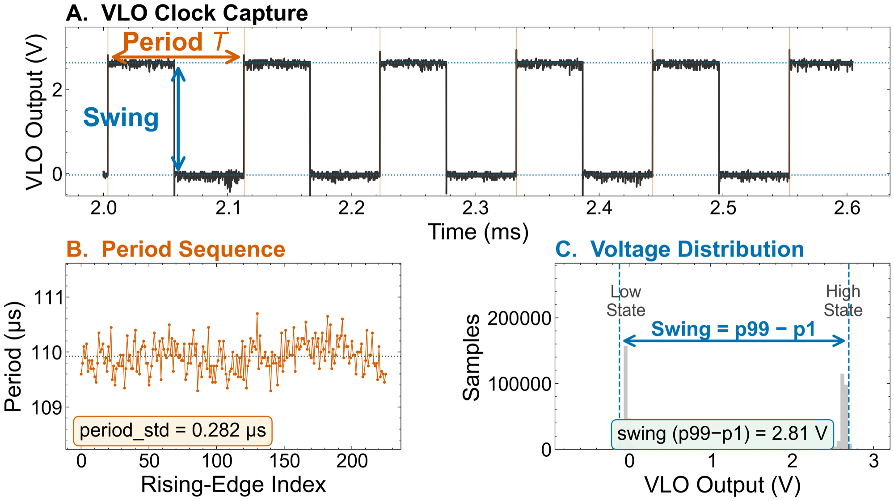
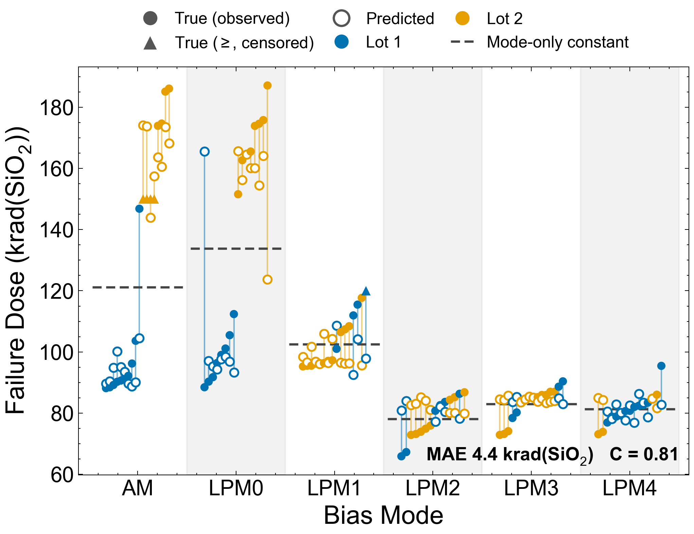
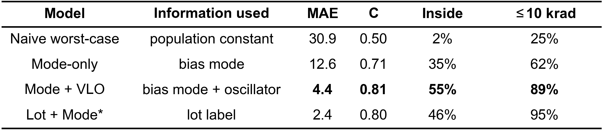
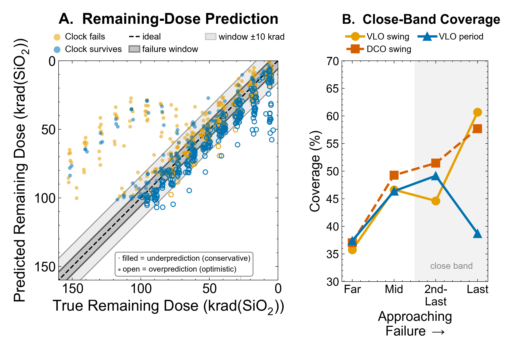
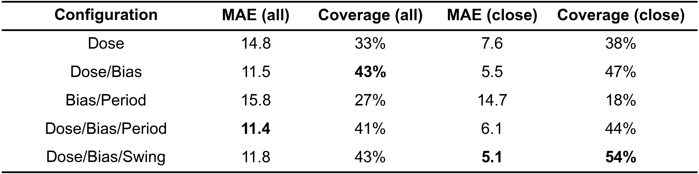

01 · Motivation
Screening complex devices beyond the worst case
Improve upon worst-case total ionizing dose (TID) screening methods for qualification of complex devices using knowledge of susceptibility based on programming choices. In situ, use electrical characteristics to individualize dose-to-failure estimates for a complex device with large sample-to-sample variability.
02 · Abstract
What the study shows
- Ninety-seven MSP430FR6989 microcontrollers from two fabrication lots were irradiated to functional failure, observed from 72 to 193 krad(SiO₂).
- Bias mode and fabrication lot determine the failure point; the most conservative bias states have the least tolerance.
- Beyond worst-case TID screening is demonstrated using programmable bias knowledge and lot-identification methods.
- During irradiation, characteristics of a local oscillator provide individualized dose-to-failure estimates with no added hardware.
03 · Method
Testing setup and DUT configurations
- Ninety-seven statically biased MSP430FR6989 units — an ultra-low-power COTS part — from two fabrication lots.
- Each device held in one of six bias configurations, from active mode (AM) to deepest sleep (LPM4).
- Stepped irradiation to failure, with VLO and DCO waveforms captured at the SMCLK pin at every dose step.
- High-dose-rate Co-60 source compliant with MIL-STD-883, Test Method 1019.9, Condition A, at ambient room temperature (≈72 °F).
- Devices biased at 3.3 V and placed into their assigned low-power mode via an ESP32-triggered I/O interrupt.


04 · Results
Experimental results
- Failure dose spans 72–193 krad(SiO₂), determined by bias mode and manufacturing lot.
- The lot effect is large and mode-dependent: in AM, lot 2 averaged 180 krad(SiO₂) versus 98 krad(SiO₂) for lot 1.
- Three clusters of six bias modes form based on TID response; the most conservative states have the least tolerance.
- First failures are missed I/O interrupts; total clock failure follows by a device-dependent margin.

05 · Signals
Feature extraction
- Each device under test outputs its clocks on a pin; an oscilloscope captures the VLO (≈10 kHz) and DCO (1 MHz) at every dose step.
- Rising-edge timing gives the period family (mean, jitter, spread); the voltage distribution gives the rail-to-rail swing, p99 − p1.
- Period features are computable on-chip from existing timers: self-reported period matched the oscilloscope at r = 0.999 (0.55% median deviation).

06 · Prediction
Pre-irradiation predictions
- A single pre-irradiation oscillator measurement pushes failure-dose predictions beyond naive worst-case and bias-mode-informed methods.
- VLO period jitter acts as a proxy for lot identity in gradient-boosted survival models built on bias mode and period jitter.
- Per-bias-mode models sharpen to MAE = 2.2 krad(SiO₂) with the lot known; MAE = 4.8, C = 0.83 lot-blind.
- The pooled, lot-blind screen reaches MAE = 4.4 krad(SiO₂), C = 0.81 from bias mode and one VLO period reading — no lot records required.


07 · In flight
In-situ health monitoring
- In flight, the same oscillator can stand in for a dosimeter and act as an end-of-life alarm.
- Bias + VLO period alone matches dose-informed accuracy (overlapping confidence intervals) — a self-contained health monitor using gradient-boosted regression trees.
- Swing features of both oscillators improve near-failure predictions, potentially generalizing to any clock output.
- Models using VLO features underpredict dose-to-failure for devices with a large gap between observed I/O failure and clock death.
- The close band represents the last two captures (≈24 krad(SiO₂)) before failure.


08 · Rigor
Model details
- Train. 50 random device-level splits — 80% (pre-rad) and 70% (in-situ) training; the remaining 20% and 30% are held out.
- Validation. Model choices are made one split at a time from each candidate's held-out performance on the other 49 splits (leave-one-split-out).
- Test. The selected model's predictions on each split's held-out devices are scored; reported metrics pool these predictions across all 50 splits — no model is ever scored on a device it trained on.
09 · Takeaways
Conclusions
- Knowledge of application bias states and lot membership informs device performance past worst-case.
- Period-derived measurements of the device's VLO inform prognostic models through life.
- Rail-to-rail voltage swing at the shared output path of two distinct oscillators informs these models in late life.
- The lot recovery demonstrated here separates two extensively screened lots; extending the screen to devices of unknown provenance is future work.